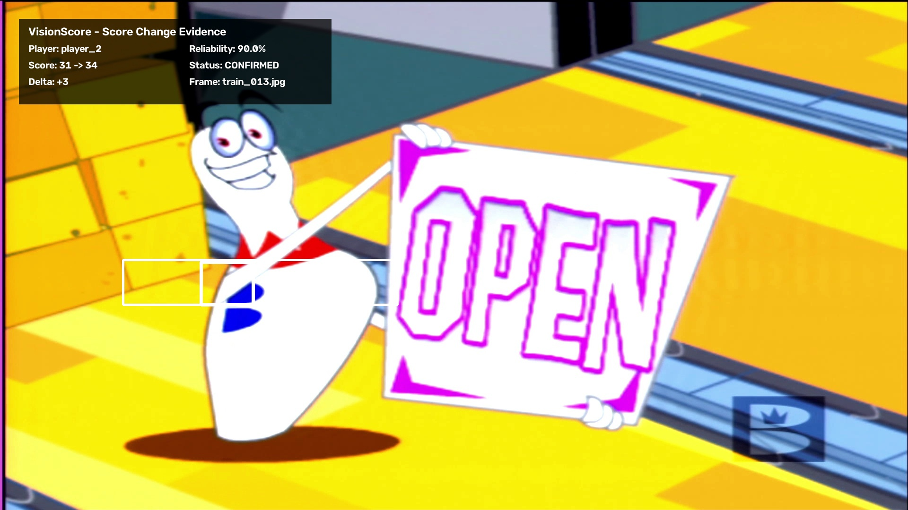
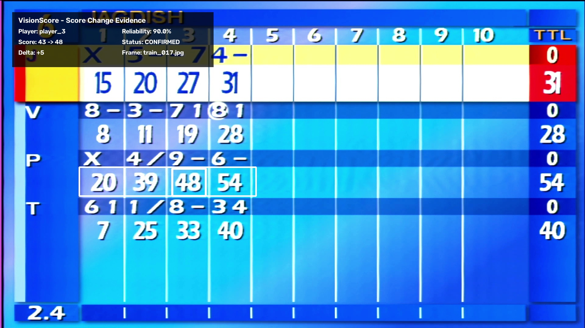

Real-Time Scoreboard Intelligence & Reliability System
| Metric | Value |
|---|---|
| Frames processed | 29 |
| Direct detections | 21 |
| Tracking holds | 7 |
| Lost frames | 1 |
| Localization coverage | 96.55% |
| OCR frames processed | 29/29 |
| Player | Score Change | Delta | Status | Reliability | Event Frame |
|---|---|---|---|---|---|
| player_2 | 31 → 34 | +3 | CONFIRMED | 90.0% | train_013.jpg |
| player_3 | 43 → 48 | +5 | CONFIRMED | 90.0% | train_017.jpg |
| player_2 | 34 → 31 | -3 | REJECTED | 10.0% | train_003.jpg |
| Events detected | 3 |
| Confirmed events | 0 |
| Rejected events | 0 |
| Uncertain events | 0 |
| Confirmation rate | 66.67% |
| Average confirmed reliability | 90.00% |

31 → 34 | +3
90.0% RELIABLE
43 → 48 | +5
90.0% RELIABLE